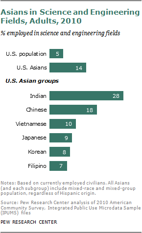

PORTRAIT OF DONNA TRAN
Source: APAMSA
Ever since white employers began looking for experienced low-wage workers, Asian Americans have immigrated to the United States. However, that is not the case today as many steps against discrimination by race and toward employment equality have been made. For instance, External Vice President of the Asian Pacific American Medical Student Association Donna Tran, a Vietnamese American, has been depicted above in her professional job (Tran, 2020). Furthermore, as another example, Sundar Pichai, a 1st generation Indian American, is the current CEO of Alphabet and its better known subsidiary, Google (Alphabet Press, 2019).
ASIANS IN SCIENCE AND ENGINEERING FIELDS, ADULTS, 2010
Source: Pew Research Center
While this data represents a disproportionate number of US Indian Americans in science and engineering fields, it is still important to note that 14 percent of US Asians work in the S&E sector while only 5% of the entire US population work in those fields. We must also notice that, of the Asian ethnicities shown in the image above, Filipinos on average hold more S&E jobs that the entirety of the US population on average.